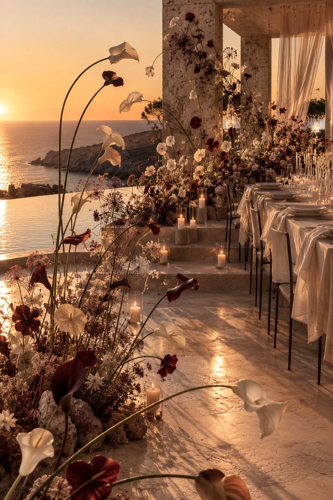
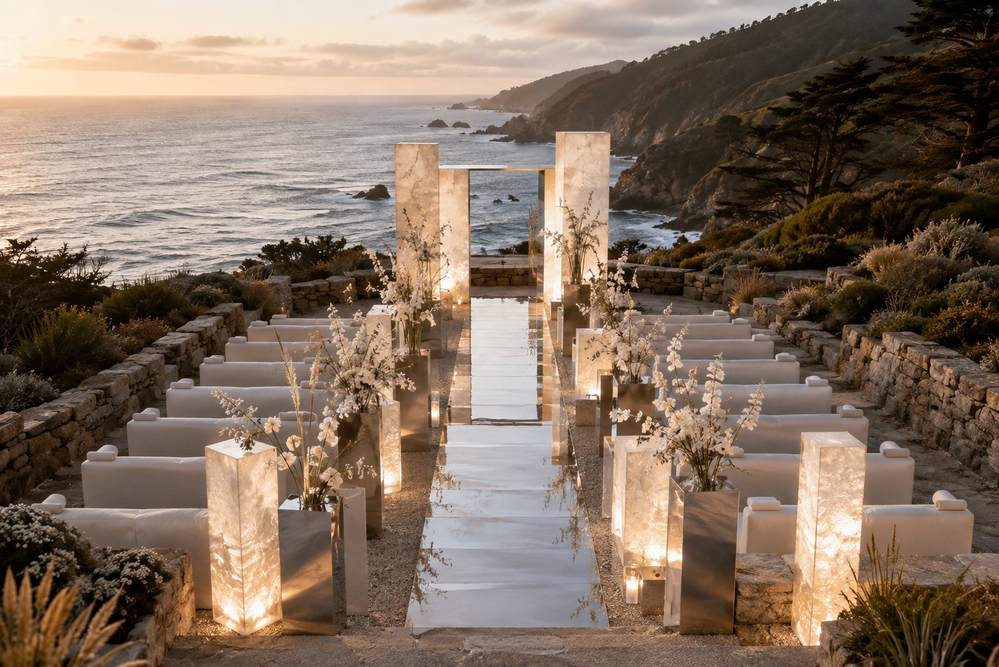
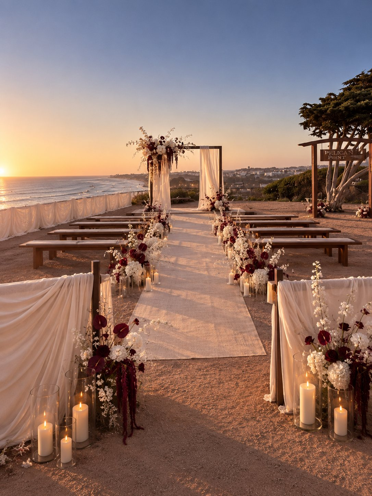
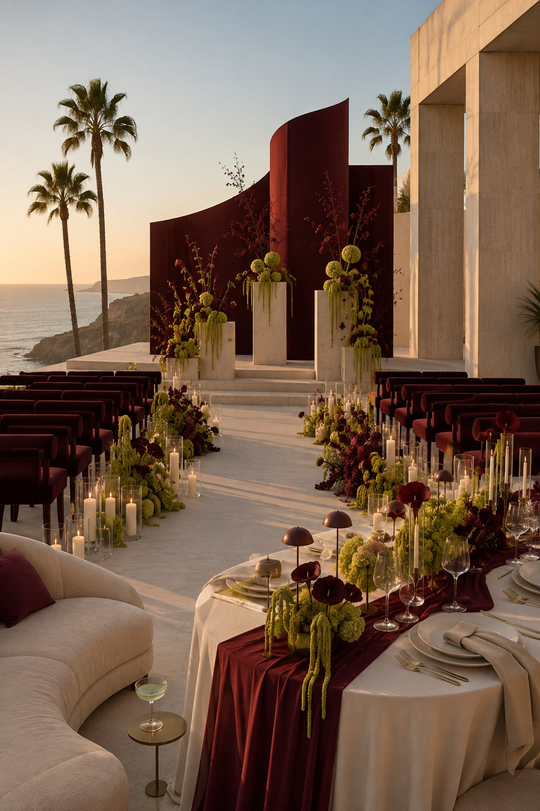
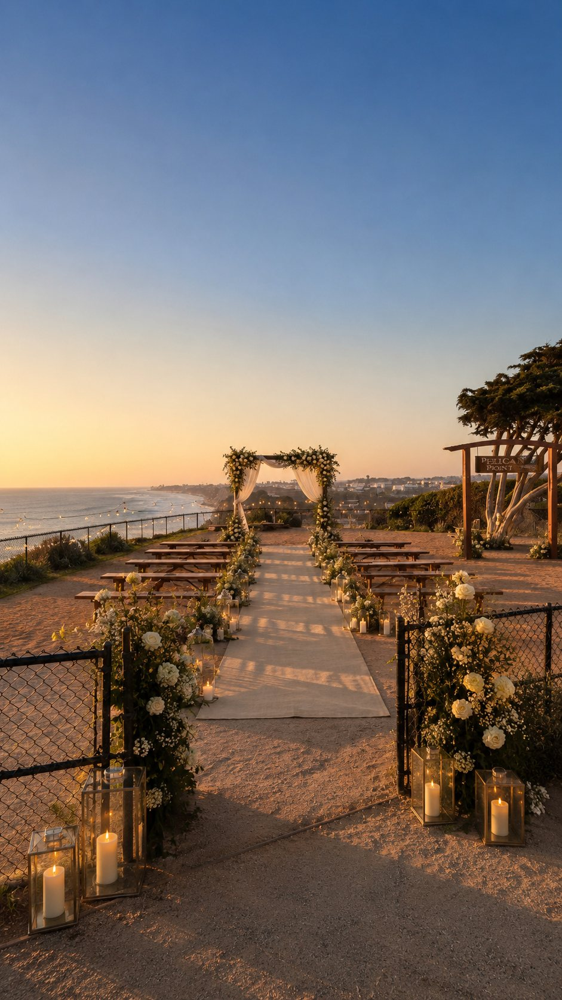
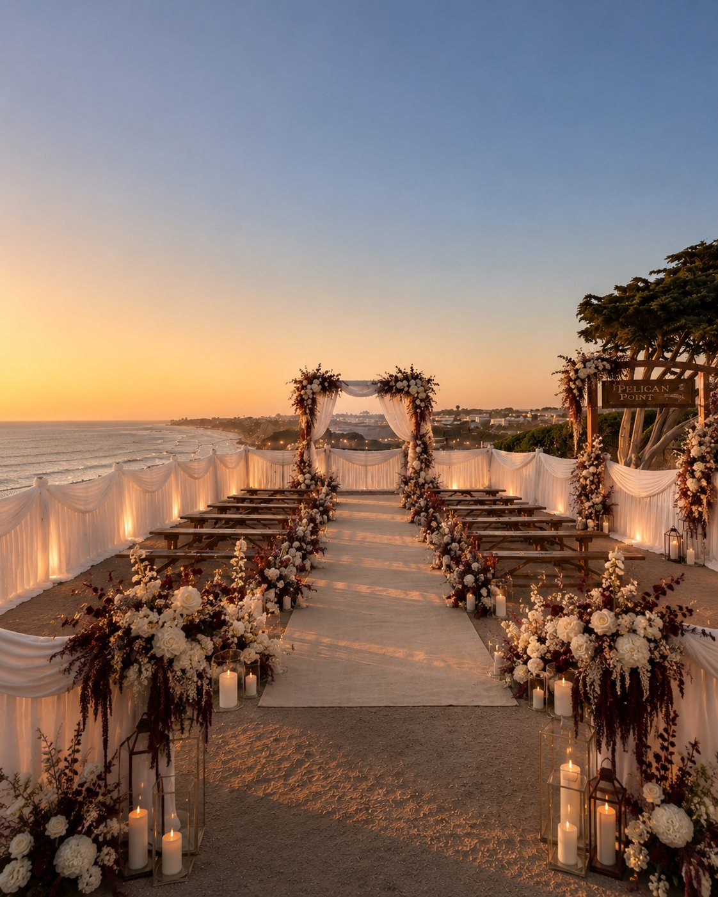
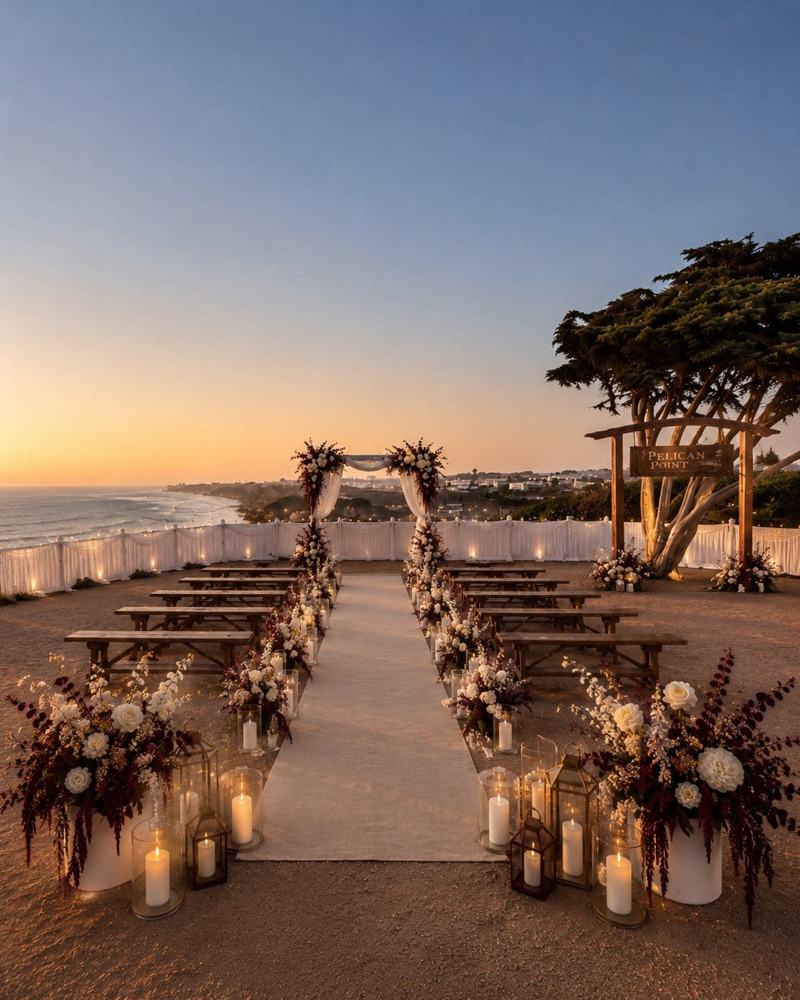
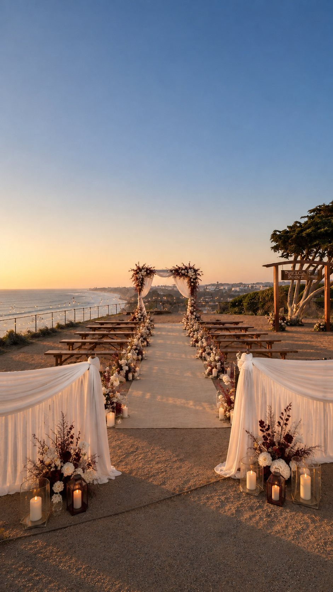

Concept Film







No. 04 - Coastal Ceremony Study
A golden coastal world shaped around ceremony, dinner and the long quiet glow before evening. The direction holds sea air, sculptural florals and warm table light in one continuous atmosphere.
Inquire - atelier@liaarmonia.com
Concept Film






